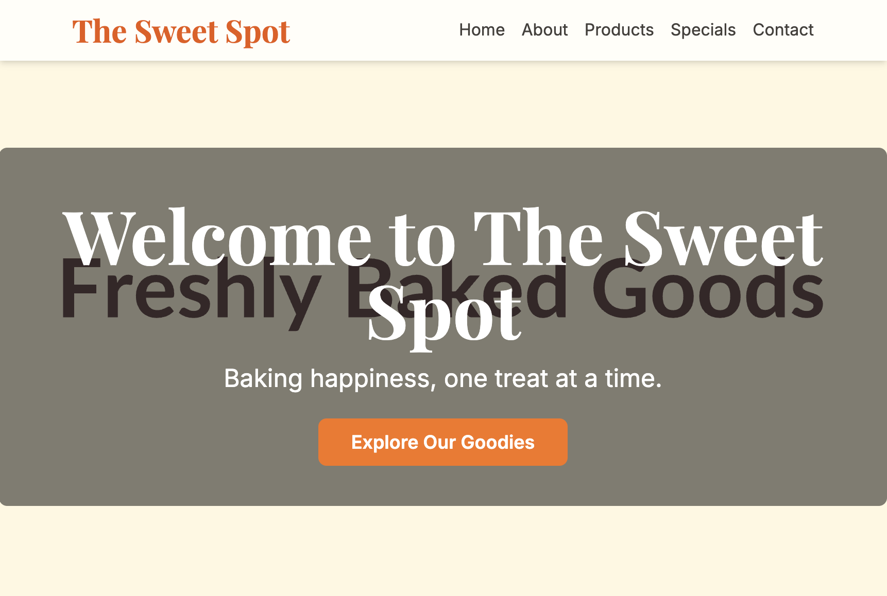

Creación de Sitios Web y Presentaciones con IA
Alexander Efremov, Experto en IA
Empresa Aspirity
Email: ae@aspirity.com | Telegram: @sabbah13
¿La Magia de un Simple Prompt?
Una Simple Petición a la IA
Expectativas vs. Realidad al crear un sitio web con un único y simple prompt de IA.
Expectativa: ¡Una Obra Maestra!

"¡Hazme un sitio web bonito para una cafetería!"
Realidad (A Menudo): Esqueleto Básico
HTML muy simple, sin estilos ni contenido.
¿Qué Salió Mal?
¿Por qué sucede esto y cómo podemos solucionarlo? ¡Vamos a descubrirlo!
¿Por Qué el Resultado es "Decepcionante"?
- Falta de activos de calidad: La IA no siempre encuentra o genera imágenes, videos o textos adecuados.
- Sin estilos ni estructura bien pensados: El resultado básico de la IA a menudo carece de diseño y navegación fácil de usar.
- El sitio no está publicado: El código generado necesita alojarse en algún lugar para ser accesible en línea.
- Falta de singularidad y marca: Las soluciones genéricas no reflejan la individualidad del proyecto.
Activos: ¿Dónde Obtener y Cómo Crear?
Activos listos para usar: Bancos de Fotos y Videos
El contenido de calidad es la base de cualquier sitio web o presentación.
Pexels – fotos y videos de stock gratuitos.
Unsplash – una gran colección de fotos gratuitas de alta resolución.
Generación de Imágenes con IA
Crea imágenes únicas a partir de descripciones de texto.
ChatGPT 4o
Midjourney
Stable Diffusion
Google Imagen 4
Creación de Videos con IA
Desde clips cortos hasta animaciones de texto.
Runway (Gen-2, Gen-3)
HeyGen (para videos con avatares)
Generación de Audio y Voz
Voz en off, música y efectos de sonido.
ElevenLabs (síntesis de voz realista)
Suno AI (generación de música)
Udio (generación de música)
Riffusion (generación de música)
Frameworks y Generadores: Estructura y Estilo
Herramientas para crear una estructura y apariencia modernas.
Frameworks de UI: Diseño Listo para Usar
Conjuntos de componentes y estilos predefinidos.
Bootstrap (172k★)
Tailwind CSS (87k★)
shadcn/ui (85k★)
Bulma (50k★)
Meta-frameworks: Inicio Rápido
Soluciones integrales para aplicaciones web modernas.
Generadores de Sitios Estáticos: Velocidad y Simplicidad
Creación de sitios web rápidos a partir de plantillas y datos.
CMS: Gestión de Contenido Conveniente
La IA genera el sitio y tú lo editas fácilmente a través de un CMS.
- CMS Headless: Strapi, Sanity.io - La IA ayuda con el contenido, el CMS proporciona la API.
- CMS Tradicionales con plugins de IA: WordPress + Plugins de IA.
- Muchos constructores de sitios web con IA (ej. Durable.co) ofrecen editores integrados.
La IA puede generar la estructura y el contenido inicial, que luego se puede importar y gestionar fácilmente a través de un CMS.
Mostrando al Mundo: Publicación (Despliegue)
¡Poner tu sitio en línea es fácil!
Plataformas de Despliegue
Servicios que automatizan el proceso de publicación.
Muchos ofrecen planes gratuitos y dominios temporales automáticos.
Tu Propia Dirección: Dominios
Cómo comprar y vincular un nombre único para tu sitio web.
Registradores de dominios populares:
Namecheap
GoDaddy
REG.RU (para dominios .RU/.РФ)
El proceso de vinculación generalmente implica cambiar los registros DNS en el sitio del registrador para que apunten a tu plataforma de hosting (Vercel, Netlify, etc.).
Herramientas de Desarrollador de IA
Desde simples chatbots hasta IDEs especializados.
Asistentes en el Navegador
Generación rápida de código, explicaciones, refactorización.
Agentes de IA: Desarrollo Autónomo
Herramientas que pueden crear aplicaciones completas a partir de descripciones.
Replit (AI / Ghostwriter)
v0.dev (por Vercel) - generación de UI
Lovable.dev
Bolt.new
Herramientas Pro: AI-IDEs y Plugins
Integración profunda de IA en el proceso de desarrollo.
Presentaciones = Sitios Web: Reveal.js
¡Esta presentación está hecha con Reveal.js!
Reveal.js: Presentaciones HTML Interactivas
Reveal.js (69k★ en GitHub) es un framework para crear presentaciones interactivas y atractivas directamente en el navegador usando HTML, CSS y JavaScript.
¿Por Qué Reveal.js?
- Interactividad: Incrusta contenido web, animaciones, diagramas interactivos.
- Flexibilidad: Diapositivas horizontales y verticales, temas, plugins.
- Exportación a PDF: Comparte o imprime fácilmente.
- Sitio Web: Se publica como un sitio web normal, accesible mediante un enlace.
- Control del Código: Control total sobre la estructura y el estilo.
- Soporte Markdown: Escribe contenido en Markdown.
Editor en Línea: Slides.com
Slides.com es un editor en línea comercial construido sobre Reveal.js. Permite crear y editar presentaciones en una interfaz visual fácil de usar, sin necesidad de editar HTML directamente.
Diseño Avanzado con IA
Integrando IA en herramientas de diseño profesional.
Figma + IA = Magia del Diseño
La popular herramienta de diseño UI/UX Figma se está integrando activamente con la IA:
- Plugins de IA:
- Galileo AI: generación de UI a partir de descripciones de texto.
- FigGPT (y similares): integración de ChatGPT para generación de textos/ideas.
- Plugins para automatizar tareas rutinarias.
- Asistentes de IA (ej. Cursor): Pueden ayudar con Figma a través de API o plugins para generar/modificar diseños basados en instrucciones.
Google Stitch: UI desde un Prompt
Google Stitch (anunciado en Google I/O, puede ser parte de Google Labs o Project IDX) – una herramienta experimental para generar maquetas de UI y código HTML/CSS listo a partir de prompts de texto o imágenes.
- Promete generación rápida de prototipos.
- Capacidad de exportar a Figma para mayor refinamiento.
- Muestra el futuro del diseño impulsado por IA.
Tu Plan de Acción: Lista de Verificación
- Elige un framework: Decide la base tecnológica para tu sitio (Bootstrap, Next.js, Astro, etc.).
- Reúne/genera activos: Prepara textos, imágenes, videos (bancos de imágenes, generación por IA).
- Crea y refina: Usa herramientas de IA (ChatGPT, Cursor, v0.dev) para generar y personalizar código y diseño.
- Publica el sitio: Despliega tu proyecto en Vercel, Netlify u otra plataforma.
- (Opcional) Vincula un dominio: Haz tu sitio accesible mediante una dirección única.
- Recopila comentarios y mejora: Analiza y desarrolla tu proyecto.
Enlaces y Recursos Útiles
- Pexels, Unsplash
- Generación de Imágenes: ChatGPT (DALL-E), Midjourney
- Generación de Video: Runway, HeyGen
- Generación de Audio: ElevenLabs, Suno AI
- Basadas en Navegador: ChatGPT, Claude AI, Gemini
- Agentes: Replit AI, v0.dev, Lovable.dev
- AI-IDEs: Cursor, GitHub Copilot, Codeium
- Reveal.js, Slides.com
- Figma + Plugins de IA (Galileo AI)
Logotipos proporcionados por Logo.dev
¡Gracias por su Atención!
Alexander Efremov
Experto en IA, Empresa Aspirity
✉️ ae@aspirity.com | Telegram: @sabbah13